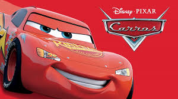
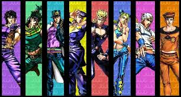

- guerra infinita

Lançado em 2018, dirigido por Anthony e Joe Russo, com atores como Robert Downey Jr., Chris Evans, Mark Ruffalo, Chris Hemsworth, Scarlett Johansson, Jeremy Renner, Don Cheadle, Paul Bettany, Elizabeth Olsen, Anthony Mackie, Sebastian Stan, Tom Holland, Chadwick Boseman, Zoe Saldana, Karen Gillan, Dave Bautista, Bradley Cooper e Vin Diesel.
- Mc queen

Lançado em 2006, dirigido por John Lasseter, com atores como Owen Wilson, Bonnie Hunt, Paul Newman, Cheech Marin, Tony Shalhoub, George Carlin, Jenifer Lewis, Michael Wallis e Katherine Helmond.
- Trans Formers

Lançado em 2007, dirigido por Michael Bay, com atores como Shia LaBeouf, Megan Fox, Josh Duhamel, Tyrese Gibson, John Turturro, Rachael Taylor, Anthony Anderson, Jon Voight e Peter Cullen.
- The Amazing Spider-Man

Lançado em 2012, dirigido por Marc Webb, com atores como Andrew Garfield, Emma Stone, Rhys Ifans, Denis Leary, Campbell Scott, Irrfan Khan e Martin Sheen.
- Jojo's bizarre adventure

A obra "JoJo\'s Bizarre Adventure" foi criada em 1987, com a publicação do primeiro capítulo de Phantom Blood na revista Weekly Shōnen Jump em 1 de janeiro daquele ano. Criada por Hirohiko Araki, a série começou como um mangá e é dividida em várias partes, cada uma com um novo protagonista que carrega o apelido "JoJo